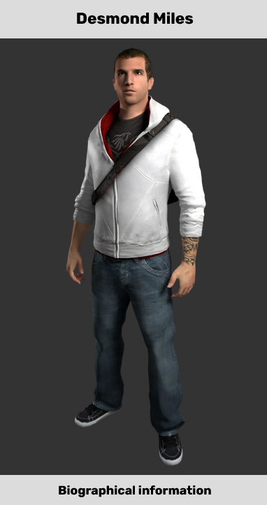

Desmond Miles
"In a few short months my life changed forever. I know my easiest days are behind
me, but I don't want them back – not now. My name is Desmond Miles, and I am an Assassin. I am an
Assassin."
―Desmond in the Black Room.
Desmond Miles
Born 1920
Died 21 December 2012
Form Human
Desmond Miles (1987 – 2012) was a member of the Assassins and a descendant of numerous familial lines
that had sworn an allegiance to the Assassins, including individuals such as Aquilus, Altaïr
Ibn-La'Ahad, Ezio Auditore, Edward Kenway, and Ratonhnhaké:ton. He was also the son of the Mentor
William Miles and unknowingly the father of Elijah, a young Sage.
By age 16, Desmond became
tired of living in hiding and aspired to pursue his own dreams. Using the minimal training of
Assassin skills he had obtained from his father, Desmond fled from the Assassin compound he had
grown up in and managed to travel from South Dakota to New York City, where he found employment as a
bartender in the Bad Weather nightclub.
In September 2012, Desmond was kidnapped and
incarcerated by Abstergo Industries, a Templar organization, and forced into a machine called the
Animus to relive the genetic memories of his ancestor, Altaïr Ibn-La'Ahad. It was Abstergo's aim to
acquire a map that detailed many "Pieces of Eden" spread across the Earth, which Desmond was
reluctantly successful in doing. Following this, he managed to escape Abstergo with the help of Lucy
Stillman, an undercover Assassin, and joined an Assassin cell in Italy, which consisted of herself,
Shaun Hastings and Rebecca Crane. Utilizing an upgraded Animus of Rebecca's construction, Desmond
relived the memories of Ezio Auditore, in order to improve upon his newly obtained skills.
Eventually, with the knowledge gained from Ezio's memories, Desmond and his fellow Assassins
obtained the location of Ezio's Apple of Eden, which was located in a vault underneath the
Colosseum. Though successful in obtaining the artifact, Desmond's body was taken over by Juno, a
member of the First Civilization, and was made to stab Lucy after Juno revealed her to be a traitor.
As a result of the shock, Desmond fell into a coma and was placed in the Black Room, the safe mode
of the Animus, in an attempt to stabilize his condition. With help from the virtual construct of
Clay Kaczmarek, "Subject 16" of Abstergo's Animus Project, Desmond was able to regain consciousness,
and found himself located in the state of New York once more, this time with Rebecca, Shaun, and his
father, William.
While in the Grand Temple, Desmond relived the memories of Haytham Kenway
and Ratonhnhaké:ton to find the key to the sanctum containing the device needed to prevent a
devastating solar flare. He also undertook field missions to retrieve power sources for the Temple,
coming into conflict with Daniel Cross. After his father was captured, Desmond rescued him from
Abstergo's Roman facility and assassinated Cross and Warren Vidic in the process.
After
finding the key, Desmond opened the sanctum but discovered he had been misled. It was made known
that the device would save the world, but also unleash Juno, who had been imprisoned because of her
hatred for humanity; using the device would also claim Desmond's life. Regardless, Desmond chose to
sacrifice himself for humanity's survival, while expressing faith that his fellow Assassins would
find a way to stop the new threat.
Biography
Early life
"You have any idea what it's like to be trapped in a place, knowing there was a whole world out
there I'd never get to see?"
―Desmond to Lucy about his childhood.
Desmond was born in an Assassin hideout near to the
Black Hills, west of Rapid City, in the United States. Known as "the Farm", the hideout was an
off-the-grid compound with a population of around thirty people, all leading a nomadic
lifestyle.
Desmond trained along with the other children of the Farm under the supervision
of William Miles, his father, which proved to be extremely intense, often scaring him. He was also
instructed to always be wary of their enemies, though as he grew older, Desmond became bored by the
war stories of the Assassins and Templars, and underestimated Abstergo's influence over the world as
a result. Finally concluding his parents to be little more than conspiracy freaks, he decided to
leave the compound.
On his sixteenth birthday, Desmond ran away from the Farm. His training
proved to be useful, as he was able to outrun and avoid the Assassins who had pursued after him.
Following this, Desmond traveled through "the badlands" and hitch-hiked for some time, until he
eventually came across a person who advised him to go to New York City, prompting him to leave for
the metropolis and blend into the crowds.[3] In 2005, Desmond also met a woman with whom he
unknowingly conceived a child.
Desmond eventually gained employment as a bartender at Bad
Weather, most likely due to his looks. While he worked there, his specialty drink was the "Shirley
Templar", a Shirley Temple cocktail with gin.[3] Wanting to avoid the Assassins, Desmond never used
his real name, and made sure to only use cash to purchase items.[5] Over time, he tried to start a
new life, but would sometimes begin to miss his family and old friends.[3]
Unfortunately for
him, Desmond was eventually found by Abstergo, after being traced through a fingerprint which was
needed for his motorcycle license. Subsequently, he was kidnapped by the Templars, who brought him
to an Abstergo laboratory in Italy. The company then went about erasing all evidence of his
abduction.[5]
Captured by Abstergo
"I'm not an Assassin... not any more."
―Desmond to Warren Vidic.
On 1 September 2012, Desmond was abducted by Abstergo agents at
the command of Master Templar Daniel Cross.[1] The next day, after awakening at an Abstergo facility
in Italy, he was held captive for use as a test subject in the Animus, a device that could read the
memories of people's ancestors through the "genetic memory" passed down through their descendants'
DNA.[5]
At first, Warren Vidic attempted to pry the information he wanted from Desmond's
mind, who was out cold, but he was met with failure. When Desmond came to, he angrily claimed to be
nothing more than a bartender, but Warren revealed that Abstergo knew of his history as an Assassin,
forcing Desmond to finally admit his past life.[5]
Warren and his assistant, Lucy Stillman,
told Desmond that they were trying to access a certain memory of his ancestor, but Desmond's
subconscious was resisting their efforts. Warren warned Desmond that if he refused to co-operate
with their efforts, they would induce him into a coma, continue their work, and leave him to die
when they had finished. Without much of a choice, Desmond agreed to help them and they became
temporarily partners.[5]
From that point on, Desmond was made to explore through the genetic
memories of Altaïr Ibn-La'Ahad – a Syrian man who was a member of the Assassin Order during the High
Middle Ages. For several days, Desmond did so under the Templar's watchful eye, but during the
nights, he was anonymously given a code that allowed him to open the door to the bedroom provided
for him, which granted him the ability to explore the laboratory that he was being held in. As he
was presented with the opportunity, Desmond used it to access the Animus' computer, and, after he
had stolen Warren's access pen, gain access to Warren's personal computer as well.[5]
Through
reading private emails, Desmond learned much about Abstergo, as well as the Animus subject that had
preceded him, Subject 16, who was noted to have suffered from the "Bleeding Effect", a drastic
symptom induced due to prolonged exposure to the Animus. Eventually, on Lucy's prompting, the
Assassins attempted to liberate him, with the gunfire of their assault being heard through an
intercom device.[5]
After the rescue attempt failed, Warren boasted that those Assassins
were, in fact, the last of the group Desmond had escaped from, and that their desert hideout had
been previously destroyed. When Warren left, however, Lucy reassured Desmond that that compound had
been found deserted and that his parents had "probably escaped". During this discussion, Lucy
revealed herself to be an undercover member of the Assassins.[5]
Subsequently, Desmond
eventually achieved Warren's goal and discovered the locations of numerous Pieces of Eden. Following
this, three executives of Abstergo Industries ordered for Desmond's execution, but his life was
saved by Lucy's intervention, as she asked them to keep Desmond alive in order to re-access his
memories if necessary.[5]
After the executives left, Desmond realized that he was able to
use "Eagle Vision", an ability that he shared with Altaïr, which he had picked up through the
Bleeding Effect. Using it for the first time, he perceived a strong interpretation of Warren and
Lucy's true allegiances, as well as countless scrawled messages and puzzles on the walls and floor
of the main laboratory and his own quarters.[5]
Escape to the Hideout
After Desmond spent some time alone in the laboratory, Lucy suddenly returned, covered in blood and
demanding that Desmond was to get into the Animus before Abstergo discovered what she had done.
Desmond, rather confused, agreed to her request and managed to synchronize himself with the closest
genetic match between him and Subject 16, which was recorded on the Animus' memory core. Inside the
Animus, Desmond experienced the birth of another of his ancestors, Ezio Auditore da Firenze, before
he was pulled out abruptly, so that the two could both make their escape.[6]
The pair were
quickly spotted by Abstergo's security, though Lucy was able to react fast enough to lock a door and
keep the guards from reaching them. Unfortunately, they were forced into an engagement with two more
security personnel, who Lucy promptly dealt with, astonishing Desmond and allowing them to continue
undetected. The two soon entered an elevator, which led down to a large open room filled with office
blocks, that housed a large number of Animi.[6]
As Desmond followed Lucy through the
maze-like walkways between the blocks, in order to avoid the guard patrols, they eventually reached
the back of the room. Lucy attempted to enter a code into the locked door of another elevator, but
it was rejected, prompting Desmond to instinctively call upon his recently acquired Eagle Vision.
Seeing the buttons necessary for the code, Desmond successfully unlocked the door on his third try.
However, once they had both reached the car park underneath the building, the two were halted by
more of Abstergo's guards, but were able to defeat them and escape.[6]
Arriving at one of
the Assassins' hideouts, Desmond was introduced to two more Assassins – Shaun Hastings and Rebecca
Crane – who had previously worked with Lucy. Lucy told Desmond that they wanted him to be trained as
an Assassin, which could be achieved in a matter of days, thanks to the Bleeding Effect. Doing so
required him to learn through the ancestor that he had matched up with through Subject 16, being
Ezio Auditore, and Desmond agreed to help almost immediately, which surprised Lucy. After this, he
was quickly plugged into the Animus 2.0, where he began to relive Ezio's memories.[6]
After
learning the skills of an Assassin through Ezio's lifetime and the Animus, Desmond was retracted
from the machine, partly to test his retention of the techniques he had learned, but also to prevent
the mental degradation that Subject 16 had suffered from being placed in the Animus for an extended
period of time.[6]
Instructing him with initiating security protocols around the hideout,
Lucy left it to Desmond to figure out how to reach them through the use of his Eagle Vision and
newfound freerunning skills. Just as he began, however, he started suffering vivid hallucinations of
the Third Crusade era. At first, the visions were short, and were nothing to worry about, but after
completing the task, Desmond was incapacitated as the visions became more real.[6]
Taken
back to medieval Acre by the Bleeding Effect, Desmond once again followed the memories of Altaïr,
though this time, without using the Animus. Through the vision, he discovered that Altaïr and Maria
Thorpe had conceived a child, Sef, who was to be Desmond's direct ancestor after Altaïr.[6]
The next day, Desmond had recovered from the experiences and returned to the Animus, though he
neglected to tell his Assassin teammates about what had happened. From there, he continued to watch
the genetic memories of Ezio Auditore, despite at one time being thrown out by "corrupted memory
sequences".[6]
Eventually, the team learned that Ezio's nemesis, Rodrigo Borgia, had become
Pope Alexander VI in 1492, in order to gain access to both another Piece of Eden, the Papal Staff,
and the Vault underneath the Vatican. As Ezio entered this Vault, he was confronted by the hologram
of a "goddess", who called herself Minerva.[6]
Minerva warned the Assassins of the end of
the world, recounting the story of the war between "The Ones Who Came Before" and their human
subjects. The Assassins were shocked when Minerva addressed Desmond by name, confusing even Ezio,
and revealed that she was in fact talking to Desmond through Ezio. Mere moments after, Desmond was
quickly pulled out of the Animus, and upon seeing the three rushing to collect their belongings, he
realized that the Templars had found their location.[6]
As he climbed out of the Animus, Lucy
tossed Desmond a Hidden Blade with the Assassin insignia on the bracer, and asked for his assistance
in covering their escape. Making their way into the warehouse, they were confronted by Vidic and
several Abstergo security guards, all of whom were intent on reclaiming Desmond.[6]
Together, the two eliminated all of the Templars that assaulted them, with Desmond – now fully
synchronized with Ezio and possessing all of his abilities – masterfully using his Hidden Blade to
kill many of the guards himself. With his entourage defeated, Warren was left to confront Desmond on
his own, though he opted instead to retreat, before promising that their victory was only
temporary.[6]
The four Assassins then fled north, with Desmond being hooked up to the Animus
inside the van so that he could continue to search through his memories for anything useful.
Meanwhile, the other Assassins began to discuss the nature of Minerva and her speech.[6]
Hiding in Monteriggioni
"What if I can't stop the visions? How long before I start painting symbols on the walls?"
―Desmond to Lucy about the Bleeding effect.
After the Abstergo attack on their warehouse
base, the Assassins traveled to Monteriggioni, one of the last Assassin safe-houses in Italy. As the
Templars were actively searching for them, and were analyzing the surrounding environment via the
use of cell phone towers, the Assassin group were forced to set up their equipment underground, in
the Sanctuary located underneath the Villa Auditore.[7]
Whilst searching the grounds of the
Villa Auditore for a way into the Sanctuary, Desmond – through the Bleeding Effect – saw a vision of
Ezio in the past, who led him to a high, narrow ledge, which he promptly leapt off. Desmond
immediately followed suit, resulting in him performing his first ever Leap of Faith into a pile of
hay. Desmond and Lucy then made their way to the Sanctuary, through the tunnel that was used by Ezio
and the villagers of Monteriggioni during their escape after the Borgia attack on the town in
January 1500.[7]
As the two of them passed through the tunnels, Desmond saw more visions,
which troubled him, and made him wonder if he would eventually "start painting symbols on the
walls". Lucy then scolded him, telling him not to joke about his condition, and reminded him that
Subject 16 was dead and that he needed to focus.[7]
When the two reached the Sanctuary,
Desmond saw another vision of Ezio, who seemed to have visited it in his old age. Before he opened
the door to Mario Auditore's office, Desmond noticed the numbers 1419, 1420, and 1421 written on the
walls, which he pointed out to the other Assassins. Shaun theorized that the numbers referred to
dates; however, he admitted that he needed to do further research on the matter.[7]
After
the team fully set everything up, Desmond was given the responsibility of bringing electricity into
the Sanctuary, by inserting power splitters into four electrical power boxes located around
Monteriggioni, which would allow them to divert small amounts of power from each source. After that
problem was sorted, Desmond continued with his regular Animus sessions.[7]
Obtaining the Apple
Harlan: "Shit! He's gone into shock!"
William: "Put him back in the machine, it's the only way to fix this"
Harlan: "But the Animus did this to him!"
William: "Am I the expert or not? Do it!"
—William Miles and Harlan T. Cunningham, regarding Desmond's health, October 2012.[src]
After
finishing in the Animus, Desmond and the others learned that the Apple of Eden which Ezio possessed
was hidden under the Colosseum. Upon traveling to Rome, the group separated, with Desmond climbing
through the ruins of the Colosseum as the others tracked his route above ground. While he headed
deeper, Desmond saw several visions of Juno along the way, until he eventually arrived at the
Basilica di Santa Maria in Ara Coeli, where he unbarred the door cover for the other Assassins to
enter the building.[7]
Upon synchronizing his DNA with a strange pedestal, several levers
and structures lowered from the church's ceiling, to which a brief vision of Ezio showed Desmond the
way to climb up. Along the way, more visions of Juno appeared, and she explained that the Vaults
were made as the only proper places to hide away knowledge. Eventually, Desmond reached a structure
with a lever, where he saw a vision of Ezio lowering it. Copying the phantom, Desmond also lowered
the lever, which caused another pedestal to rise from the ground, along with a set of poles that
Desmond used to make his way down.[7]
Once again synchronizing his DNA with the pedestal,
Desmond activated an elevator that took all of the Assassins down to the chamber below, which held
the Apple in its center. As it was noted that a free-running course was the key to bridging the gap,
Desmond maneuvered his way around the chamber and lowered several lever throughout the course, all
the while seeing visions of Juno scattered throughout. Finally, the stairway leading up to the Apple
was raised, and the Assassins noticed several symbols being projected around the room as they walked
up towards the Piece of Eden.[7]
However, as Desmond took the Apple of Eden from its
pedestal, Juno's voice was heard, saying that Desmond's DNA had activated the Apple. Juno then took
control of Desmond's body through the Apple, and forced him to stab Lucy in the abdomen with his
Hidden Blade.[7]
After collapsing in the Colosseum Vault, Desmond was taken away by the
Assassins. Having slipped into shock at the ordeal, his unconscious body was recovered and
transported to an unknown location.[7]
During this time, Desmond was placed back into an
Animus by William Miles and Harlan Cunningham. In this session, Ezio and Leonardo da Vinci were
shown to have discovered a smaller Vault in Rome, and as Ezio's DNA had activated the Vault, a set
of coordinates that was intended for Desmond were projected, showing: 43 39 19 N 75 27 42 W.
Finally, after reliving more memories, Desmond's condition worsened to the point that he entered
into a comatose state.[7]
Exploring the Black Room
"Right now you should be sitting in a hospital ward, drooling, and chewing on your tongue. For now
the Animus is keeping you intact. Keeping all your ancestors from collapsing into one big mess. But
if you can't find a synch-nexus, all those personalities will smash together. That won't be pretty."
―Clay informing Desmond about his mental state.[src]
Due to the intense mental strain, the
exposure to the Apple, and the incident with Lucy which caused Desmond to fall into a coma, William
Miles – Desmond's father and the de facto leader of the Assassin Order – ordered Rebecca to place
Desmond into the Animus and shut down all of its non-essential functions, stabilizing his condition.
As such, this led to Desmond entering the Black Room, a safe mode built into the Animus' core
programming.[3]
Upon first awakening on the Animus Island, Desmond was met with a virtual
construct of Clay Kaczmarek, Subject 16 of Abstergo's Animus Project. Clay explained that Desmond
needed to continue reliving his ancestors' memories until they had nothing left to show
him—eventually reaching what Clay called a "Synch Nexus". Once Desmond had located it, the Animus
would be able to separate his consciousness from Altaïr and Ezio, and he would be able to wake
up.[3]
Clay then coldly remarked that if he hurried, Desmond could make it in time for
Lucy's funeral, which bombarded Desmond with flashbacks of the events that transpired in the
Colosseum Vault. Desmond felt deep regret for his own actions, but he proceeded to relive the
memories of Ezio Auditore, so that he could return to a conscious state.[3]
After completing
the first sequence of Ezio's memories, Desmond overheard a conversation between his father and
Rebecca. During it, William was examining the Apple, which made Rebecca nervous. However, William
reassured her that he did not believe he had the proper genes necessary to use the Apple, with
Rebecca following the conversation by guessing that Desmond did.[3]
Desmond was then pulled
out of the memory corridor and back to Animus Island, where Clay explained that the Animus had
detected him leaving his assigned partition, and had pulled him back to the island, acting as a
failsafe program to try to keep his mind intact. Clay also told Desmond that he would keep the
Animus distracted, in order to stop the machine from thinking that Desmond was a virus and deleting
him.[3]
Whenever he collected enough data fragments scattered across Constantinople, Desmond
could enter the core of the Animus and reflect on his own memories—the Farm where he grew up,
training as an Assassin, his escape from the Farm, life in New York City, and his eventual capture
by Abstergo.[3]
He recalled his relationship with his parents and regretted not listening to
them, as well as coming to terms with his role as an Assassin, noting that his easiest days were
long gone but that he did not want them anymore.[3]
Between certain sequences, Desmond was
pulled out of Ezio's memories, and conversed with Clay upon his return to the Animus Island. The
first time they talked with each other, Clay asked Desmond if it was possible that he could go with
him once he exited the Animus, and attempt to find another body which he could occupy. However,
Desmond hesitantly refused, and Clay remarked that he understood the reason why and lamented on his
situation.[3]
Later on, Clay asked Desmond if he regretted anything he had done in his
lifetime, like leaving his parents and ignoring his role as an Assassin for so long. In response,
Desmond admitted that he wished he had been more patient with his mother and father, as well as
confirming to himself that things between him Lucy could have gone differently. Afterwards, Clay
thanked him for "making sense".[3]
Being pulled out a third time, Desmond was confronted
with the sight of the island disintegrating around him. Clay proclaimed cynically that the Animus
had scheduled them for deletion, grabbing onto Desmond as the virtual ground beneath their feet
began to fracture.[3]
Desmond was bewildered at both the suddenness of it and whether Clay
intended to have both of them die together. He was proven wrong with this doubt, when Clay
sacrificed himself, pushing Desmond back through the portal to allow him to relive Ezio's final
memories.[3]
Regaining consciousness
"I know what we need to do."
―Desmond, upon awakening from his coma.
When Ezio discovered the Apple of Eden that Altaïr
possessed, it began to glow. Ezio, recalling his experience in the Vatican Vault, called out to
Desmond, knowing that he would be listening. He urged Desmond to make sense of all the questions and
suffering he had been through in his life, while bringing his story to an end and directing Desmond
into the Synch Nexus.[3]
It was here Desmond was confronted by another member of the First
Civilization: Jupiter. The advanced being explained that the other members of the First Civilization
had built Vaults all over the world, each of them researching different methods of salvation from
the impending solar flares. Each Vault's discoveries were transmitted to the Grand Temple (located
in modern upstate New York), where Jupiter, Juno, and Minerva sorted through what the others had
found. In all, six solutions were tried and tested, and although they failed, a major breakthrough
appeared to be emerging. Unfortunately, before they could reach this conclusion, a massive solar
flare struck the Earth, killing almost the entire First Civilization. Less than 10,000 humans lived,
and fewer members of First Civilization remained, though both races worked together to rebuild
mankind following this disaster.[3]
Jupiter then charged Desmond with a mission: to visit
the Grand Temple. He told Desmond to take his words, and to "pass them from [his] head into [his]
hands", as by doing so he would "open the way". However, he warned Desmond that he was not sure how
things would end, for either him or Desmond. Following this, Desmond then woke up from his coma,
with Shaun, Rebecca, and his father standing beside him as he sat up from the Animus' seat. After
Desmond took in his surroundings, he told the others that he knew what they needed to do
next.[3]
Arrival at the Grand Temple
William: "The Temple triggered a bleeding effect. You collapsed and entered into a fugue state."
Desmond: "So naturally you dropped me into the Animus instead of... I don't know... making sure I
was okay?"
—William and Desmond arguing after Desmond was put in the Animus.
Desmond, William, Shaun
and Rebecca soon arrived at the Grand Temple, where Desmond used the Apple of Eden to unlock the
entrance. However, on doing so, the Temple activated the Bleeding Effect within Desmond, which
showed him that a key was required to unlock its inner chambers. Due to the event causing Desmond's
mind to enter a brief fugue state, he was placed back into the Animus by the Assassin
team.[8]
Upon reliving the memories of Haytham Kenway, an 18th-century Templar who once had
possession of the key, Desmond learned that ultimately, Haytham's illegitimate son Ratonhnhaké:ton
would come into possession of it. Desmond then began to search through his memories in order to find
the artifact. Desmond occasionally left the Animus to explore the chambers of the Temple, where he
often came across Juno as he had done in the Colosseum Vault. She explained to him the details of
the six methods that the First Civilization had tried to use in order to save the world from the
previous apocalypse, as well as continuing to urge him towards finding the key.[8]
However,
Desmond's experiences in the Animus were interrupted when it was revealed that the Temple's power
sources were running low, and that they needed to be replaced. Thanks to Shaun tracking some down,
the first power source was found in Manhattan. Desmond journeyed there to carry out his first proper
mission as an Assassin, in which he climbed a skyscraper and parachuted from a crane to another
building, where the power source was located. Whilst there, he encountered the Templar operative
Daniel Cross, whom he disarmed and then knocked out in order to escape.[8]
After further
exploring the Temple, Desmond came to realize that whatever was waiting for the Assassins beyond the
door would ultimately benefit Juno in some way, though as Desmond was unsure how it would do so, he
warned the others to "play it safe". Desmond also revealed to the others that when Juno appeared to
him in the Colosseum Vault, he was shown a vision that showed that should Lucy have been kept alive,
she would have taken the Apple of Eden to Abstergo for utilization in the Eye-Abstergo satellite,
though it would ultimately fail. Because of this, Desmond came to terms with the fact that he was
not forced to kill Lucy, but he instead did it to stop the Templars from gaining the upper
hand.[8]
Some time later, Shaun discovered a second power source that was in the possession
of a wealthy woman who was set to attend a martial arts tournament in São Paulo, Brazil. After
arriving at the stadium and sneaking across through the rafters, Desmond arrived at the room the
woman was staying in, only to find Daniel Cross once more. After Daniel shot the woman and her
husband, he attempted to flee with the power source. However, Desmond managed to catch up to him,
eventually besting him in hand-to-hand combat and incapacitating him once more.[8]
With the
power source in hand, Desmond fled from the Abstergo agents pursuing him, and escaped the stadium by
boarding a train. He and his team subsequently left Brazil on board the Altaïr II, and returned to
the Grand Temple. Soon after the team's return to the Temple, Shaun located a third power source in
a museum in Cairo, Egypt. However, as the team's deadline of 21 December was rapidly approaching,
and Desmond had yet to locate the key to the Temple door, William went to retrieve the artifact in
Desmond's stead.
Rescuing his father
William: "You never should have come here. You put everything on the line - for, what? So you could
rescue your father?"
Desmond: "Yeah."
—William and Desmond, upon William's rescue.[src]
After Desmond experienced more of
Ratonhnhaké:ton's memories, the Assassins were sent a video message by Warren Vidic, who explained
that Abstergo agents had intercepted William at the museum and brought him to Abstergo's Roman
facility. Vidic stated that in order to let his father free, Desmond would need to hand over the
Apple of Eden. Soon after, Desmond traveled to the facility with Shaun and Rebecca.[8]
Upon
his arrival at the building, Desmond was offered a peaceful trade-off by Vidic over the intercom,
but he refused. Desmond then fought security guards as he made his way to the building's upper
floors, eventually arriving at the Animus room he had been held captive in, months before. There,
Daniel Cross yet again confronted Desmond, ordering that he hand over the Apple. Before Daniel could
shoot Desmond however, he suffered from the Bleeding Effect triggered by the Apple[9], causing him
to suddenly speak in Russian. Panicked, Daniel fled and Desmond gave chase. Eventually, the two
ended up in the room for the Templars' Animi Training Program, as Desmond caught up to Cross and
assassinated him, and retrieved his gun.[8]
Desmond proceeded to ride an elevator up to the
fifth floor, where Vidic's office was located, killing any security guards that crossed his path. As
Desmond made his way towards the office, Vidic explained his anger over intercom, stating that
Daniel was like a son to him, and that Desmond and the Assassins only took what did not belong to
them, such as the Apple of Eden and Lucy Stillman's life. Eventually, Desmond made his way to
Vidic's office, where William was detained. After Vidic told Desmond to give him the Apple, Desmond
used it to control the security guards in the room, forcing one to shoot and kill Vidic before then
influencing them all to shoot themselves.[8]
After freeing his father and hugging him,
Desmond took the third power source and left the building, using the Apple to cover them. Once he
arrived back at the Temple, he placed the power source in its slot, received the details of the last
two solutions the First Civilization attempted, and then re-entered the Animus.
Sacrifice
"You know it's true. It's already started. I need to do this now. So go! GO!"
―Desmond's final words, to his father.
After reliving more of Ratonhnhaké:ton's memories,
Desmond learned that the Assassin eventually buried the key to the Grand Temple's barrier outside of
the Davenport Homestead manor in Massachusetts. The team traveled there and retrieved it from Connor
Davenport's grave, before they returned to the Temple. Using the key to open the final gate,
Desmond, William, Shaun and Rebecca proceeded into the Temple's deepest chambers.[8]
Upon
arriving in the central room, which contained a large orb set in a pedestal, the Assassins were
greeted by Juno, who stated that should Desmond touch the orb, the world would be saved. However,
immediately following this, Minerva appeared, urging Desmond not to touch it. She explained that
Juno had previously tried to use the First Civilization's technology to conquer the world rather
than save it, and that she was sealed inside the Temple so she would not be able to do so. While the
device would save the world from the impending solar flare, it would also kill Desmond and release
Juno, allowing her to continue her quest to rule over Earth.[8]
Shocked by Minerva's
appearance, Juno told her to show Desmond what would happen if the solar flare was not stopped.
Minerva stated that while the majority of Earth's population would die, there would be a small
amount of survivors. Desmond would become a symbol of love and hope for the new world, similar to
Jesus Christ, though following his death, his message would eventually be misinterpreted and
corrupted by those who followed him, and lead to war, thus repeating the cycle of religious conflict
through history.[8]
Despite this, Minerva pleaded for Desmond to let the world burn instead
of saving it and releasing Juno. Desmond stated that if Juno was released, there would still be the
slim chance that humanity could stop her, while if the world was allowed to be subject to the
natural disaster that the solar flares posed, billions would die, and there would be no hope.
Acknowledging Desmond's decision, Minerva stated that the consequences of it were his "to live – and
die – with."[8]
With his mind set on his choice, Desmond turned to William, Shaun, and
Rebecca, and commanded them to get as far away from the Temple as possible. William pleaded for him
to reconsider his decision and find another way instead, but Desmond refused, stating that it was
too late to find another option. With this, William, Shaun, and Rebecca hurried to leave.[8]
After the three exited, Desmond walked up to the orb. Juno watched as he touched it with his hand,
his body shook violently for several moments and shone a bright gold; though, after a brief time,
Desmond fell to the ground, sacrificing his life to protect the planet from the Second Disaster.
Later, she was seen walking away from his body, thanking him for releasing her.[2][8]
Postmortem and legacy
"I had this colleague. He was our boss's son. I didn't much care for him at the start. Everyone
treated him like he was so bloody special. To me, he just wasn't invested in anything that didn't
affect him personally. But, I was wrong about him. He became my friend. Put himself through hell.
And he saved us all in the end. So I reckon... Well, I can't apologize to him, but I can, I don't
know. I can try and live up to his example."
―Shaun Hastings reflecting on Desmond, 2015.
Desmond's body was eventually discovered by
Abstergo several hours after his death, and an immediate autopsy was performed, with various DNA
samples being extracted in the process. Case Fisher, the lead of Abstergo Sample Recovery Unit 3,
noted that aside from a severely burned arm and fused bones in the right hand, Desmond's body was in
good condition.[10]
Upon completion of the autopsy, Desmond's body was removed, while his
bag and personal items were collected for further analysis.[10] His genetic memories were uploaded
to the Abstergo Cloud.[8]
Within a year, Desmond's memories were being exploited by Abstergo
Entertainment, the multimedia branch of Abstergo Industries, for use in the Sample 17 Project. Many
of his ancestors' memories were subsequently explored by Abstergo Entertainment's researchers,
including the memories of the sheep farmer Bernard Kenway, and his son Edward - the father of
Haytham, and grandfather of Ratonhnhaké:ton.[10]
Data from Desmond's mobile phone was also
recovered by Abstergo Entertainment, and stored on their servers. This data included photos of the
team and voice memos directed towards his father, revealing Desmond's feelings of regret over
leaving the Farm and his acceptance of the role that he had been chosen to play.[10]
By
2015, an Assassin surveillance drone was named in honor of Desmond, alongside other drones, all
named after fallen Assassins, and used during the missions coordinated by Bishop. The 'Desmond'
drone was later destroyed by Templar Juhani Otso Berg beneath the Buckingham Palace vault during the
chase for the Shroud of Eden.[4]
Approximately two years after fleeing the Assassins Desmond
met a woman with whom he unknowingly sired a son. In 2015 Elijah's mother brought the child to an
Abstergo clinic in New York, being unaware of the company's affiliation with, or even the existence
of, the Templars. Through analysing the his lineage, Abstergo learned of the boy's parentage;
further analysis also revealed that the child was also a Sage. Although Dr. Álvaro Gramática wanted
to kidnap the boy and dissect him for experimentation, Isabelle Ardant planned to abduct Elijah when
he was older and put him into an Animus for fifty years, so she could study the genetic memories of
both his ancestors and Aita.[11] Elijah eventually became a leading member of the Instruments of the
First Will only to later betray them.[12] Afterwards, Elijah helped the Assassins in defeating Juno.
By August 2020, Desmond's mind had spent eight years in the Grey. In his time there he was
transformed into a being of light calling himself "The Reader". The Assassin Layla Hassan entered
the Grey via the Isu simulation device Yggdrasil to find a way to slow the magnetism of the global
aurora borealis device. Layla showed the Reader more possibilities and calculations based on
timelines he had not explored. The reader then told Layla she had a minute to live as the radiation
from the chamber was killing her physical body. Layla then decided to stay in the Grey with the
Reader and explore more timelines.[13]
Ancestry
Shaun: "What is he... is he the chosen one, is that it? Little Jimmy Special or some bollocks like
that?"
William: "I'm afraid not. But what he has is rare. His genes contain high concentrations of First
Civilization DNA. Only about one in ten million are so lucky."
—Shaun and William about Desmond's importance to the Order.[src]
Desmond Miles came about
from many different lines of Assassins through both sides of his family. As a result, Desmond had a
higher concentration of First Civilization genes in his DNA than most other humans, which allowed
him to properly wield the Pieces of Eden,[3] which the First Civilization had initially created so
that only their race could use them.[2]
Desmond's most distant known ancestor was Lucius, a
Gallo-Roman Assassin. His son and fellow Assassin, Aquilus, was next in line in Desmond's
ancestry,[14] alongside Aquilus' wife Valeria. Lucius and Aquilus were also members of the Liberalis
Circulum, an Assassin organization, and were closely related to the Ankh, a First Civilization
artifact that was wielded by Isis.[15]
During the height of the Hunnic Empire in the 5th
century, Desmond had an ancestor believed to be a Sage living in Europe. This was discovered by
Abstergo Entertainment when they were researching Desmond's genetic material.[16]
During the
High Middle Ages, Umar Ibn-La'Ahad and his wife Maud would become Desmond's ancestors, and were both
members of the Levantine Assassins under the leadership of Al Mualim.[17] They had one son, Altaïr,
who became one of the most legendary Mentors of the Assassin Brotherhood. Following them, Altaïr and
his wife Maria Thorpe conceived two children, Darim and Sef, the latter being Desmond's next
ancestor.[3] Next, Sef married and had two daughters, who moved to Alexandria after his death at the
hands of Swami.[17] The family line would pass on and eventually become Desmond's maternal line.
Desmond's bloodline also extended to Renaissance Italy, where his ancestor Domenico
Auditore founded the House of Auditore in Monteriggioni with his son, Renato. Two generations later,
Desmond's ancestor Giovanni Auditore da Firenze was born, a leading figure in the Italian
Brotherhood. Giovanni and his wife Maria gave birth to his next ancestor, Ezio,[6] who like Altaïr,
would become one of the Brotherhood's most renowned Mentors.[7] Late in his life, Ezio married an
Ottoman-born Venetian woman named Sofia Sartor, who became Desmond's ancestor after conceiving one
of their children, a daughter named Flavia.[3]
Desmond's ancestors during the 18th century
included Edward Kenway, a British pirate and Assassin.[10] Edward and his second wife Tessa fathered
a son,[18] Haytham, who became the first Grand Master of the Colonial Templars. Subsequently,
Haytham's relationship with a Kanien'kehá:ka tribeswoman named Kaniehtí:io resulted in a son named
Ratonhnhaké:ton, who was raised among his mother's tribe. Ratonhnhaké:ton would later become heavily
involved in the Assassin-Templar conflict during the American Revolutionary War, fighting for the
Assassin Order.[8] Ratonhnhaké:ton would later marry a native woman from a nearby tribe and had a
son and two daughters; his youngest child was named Io:nhiòte.
The Auditore and Kenway
families eventually intertwined, becoming Desmond's paternal line that passed from William to his
son. Other known matrilineal ancestors hailed from a variety of places and eras, including the
Ashikaga Shogunate in feudal Japan; 1800's France, in the midst of the Revolution and later during
the Napoleonic Wars; 19th century New England and the American Midwest; Taiwan during the
Sino-French War; and as recently as the Civil Rights and Peace movements on the American Pacific
Coast in the 1960s. All of these were detailed in an internal email sent between high-ranking
members of the Abstergo Entertainment development team.[10]
Personality and characteristics
Desmond was a gruff and cynical individual, who held a serious outlook on life. This was mainly due
to him learning of the Templars and Assassins in his youth,[5] and even of their connection to
Abstergo, as he was educated to their power and reach during his childhood at the Farm. However, he
grew to disbelieve this, eventually dismissing what he was taught as paranoid delusions—and his
parents as "conspiracy freaks"—until he was kidnapped and brought to Abstergo.[3]
Despite
this, he was not above jesting about his situation, and would occasionally crack jokes, although
they rarely elicited a good reaction from anyone. After his emancipation from Abstergo, Desmond's
demeanor became considerably more relaxed, and he spent a notable amount of time conversing with
Lucy. However, he began to question his sanity after experiencing the Bleeding Effect.[6]
After Lucy's death and the discovery of his confinement in the Black Room, Desmond was overcome with
grief and remorse. While trapped in the Black Room, he reflected on his life, his family, and his
choice to not be an Assassin. However, Desmond eventually found closure while recalling his past and
learning from Ezio and Altaïr's final genetic memories; he came to realize that his easier times
were over, and that he had to face the fact that he was an Assassin and not to shy away from
it.[3]
Upon reuniting with his father, the two had a strained relationship due to William's
rather cold-hearted nature along with Desmond's past decisions, leading Desmond to personally refer
to him as an 'asshole' and thus the two distanced themselves from each other for some time.
Eventually however the two were able to reconcile their differences and began to show more care for
each other, as proven when Desmond personally journeyed to Abstergo in order to save his father.
Desmond could also be selfless and brave, an example being his decision to save his father
from Abstergo, even if he thought of him as an "asshole", as he put it. He also had little issue
with taking lives when necessary, evidenced in his conflicts with Abstergo's guards and when he used
the Apple to kill Vidic.[8]
Equipment and skills
"You've picked up every single one of Ezio's skills. The adoption rate is fantastic! Another day or
two and we'll be done."
―Lucy Stillman to Desmond Miles regarding his rapid adoption of skills, 2012.
As Desmond was
trained during childhood as an Assassin, he was proficient in basic reconnaissance skills, such as
eavesdropping and pickpocketing, both of which he used in his first days at Abstergo. After about a
week of being forced to relive the memories of his ancestor Altaïr Ibn-La'Ahad, Desmond developed an
extra-sensory ability dubbed Eagle Vision.[5]
Later on, after willingly exploring the
memories of his ancestor, Ezio Auditore, Desmond gained his ancestor's freerunning skills, allowing
him to scale structures easily. Additionally, he learned sword-fighting and fist-fighting
techniques, including disarming and countering. Not long afterward, he was able to easily fend off a
Templar attack on the hideout.[6] After fully synchronizing with Ezio, Desmond was able to use most
of his ancestor's abilities in the modern era, most notably freerunning across Monteriggioni and the
Colosseum.[7]
After waking up from his coma, Desmond explored the memories of one of his
ancestors, Ratonhnhaké:ton, improving his agility when traversing man-made structures and natural
elements. As such, he easily outmatched Daniel Cross' freerunning capabilities. Desmond could also
blend with crowds more effectively and use foliage to bypass enemies undetected. Most prominently,
Desmond gained Ratonhnhaké:ton's deadly combat skills and dual-wielding capabilities, allowing him
to engage and triumph over multiple opponents during his mission to rescue his father from
Abstergo.[8]
Desmond naturally used a single Hidden Blade prior to his coma, which he used
with great proficiency. He was also capable of using a tactical baton in combat during the Templar
attack in the Hideout. After his coma, Desmond was now able to rely on his fists and legs alone, and
was now wielding a bowie knife and Daniel Cross' MK23 pistol, which Desmond obtained after killing
Cross. Desmond managed to use the pistol with great skill and force, without ever losing aim.
By the end of his life, Desmond had become a particularly skilled Assassin, capable of
fighting against multiple armed guards with ease, guards who were trained to the point they could
easily shatter ballistic glass simply by jumping, a feat Desmond was also capable of. He was able to
send his enemies several meters into the air just by kicking them, as his ancestors could in the
past.